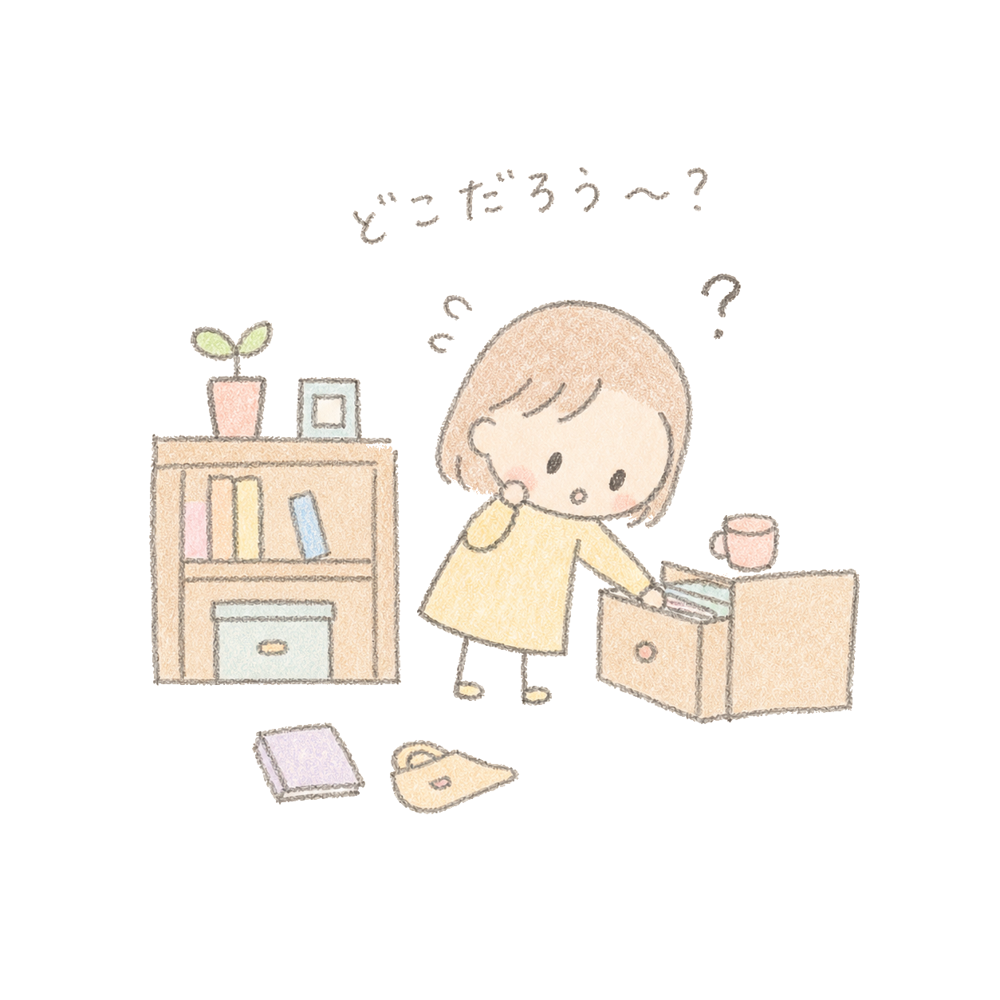

靴を探してください。こう言われたときに、空を見上げる人はあまりいませんよね。私たちは1日の中で、何度も何かを探しながら生活をしています。家を出る前に鍵を探す、人混みから待ち合わせている友達を探す、レストランのメニューの中から食べたいものを探す——全て何気ない行動ですが、その全てに人間ならではの癖があります。
靴を探すときに自然と下方向を見てしまうのは、「靴は床の近くにあるものだ」という経験から形成された知識があるからです。また、鍵を探すときには前回どこに置いたかという記憶を手がかりにするでしょう。このように、人間の探索行動には、過去の経験から形成された知識や記憶が深く関わっています。

視覚的な場面の中から目標を探すこのような行動を、特に視覚探索（しかくたんさく）と呼びます。この「人間らしい探し方」の巧みさは、ロボットと比べるとよくわかります。災害現場など人が立ち入れない危険な場所では、ロボットが探索を担うことがあります。従来のロボットは空間を網羅的にスキャンするように動作しますが、人間は「この辺にあるはずだ」と当たりをつけ、効率よく目標に辿り着くことができます。この「当たりをつける」能力の背後には記憶や経験則が関与していますが、そのメカニズムにはまだ解明されていない部分が多く残っています。
視覚探索の研究は、こうした基礎的な問いにとどまらず、様々な場面への応用が期待されています。「人が何に注意を向けやすいか」という知見は、広告・パッケージなどのデザインに活かされており、自動運転システムの開発や、教材・教室環境のデザインといった教育分野にも応用されています。
私はこの視覚探索と記憶の関係や性質について、視線測定やVRを用いた行動実験によってデータを収集し、その背後にある脳の情報処理過程を数理モデルで記述・推定することで研究を行っています。